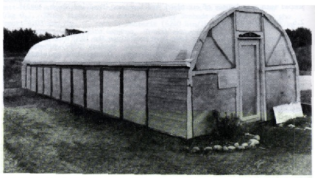
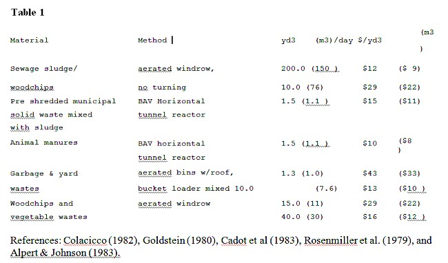

Composting
This is an excerpt from the New Alchemy Insitute Research Report No.3, November 1986 by Bruce Fulford of BioThermal Associates. For the PDF version of this page, please click here.
This work was supported in part by the Funding Exchange, the Jessie Smith Noyes Foundation, the Massachusetts Society for the Promotion of Agriculture and James L. Peeler.
ISSN 0898-686X ISBN 0-933822-09-X
Reprinted March 1990.
Abstract
This research report summarizes more than two years’ research on the design, construction and testing of an experimental composting greenhouse developed by the Biothermal Energy Center and the New Alchemy Institute in early 1983. A joint research project at the Institute’s 12-acre research and education farm on Cape Cod, Massachusetts combines modem compo sting and horticultural practices in the same structure. Compost is enclosed in an insulated chamber within the greenhouse. Heat and carbon dioxide liberated by bacteria during composting are used to enhance the production of greenhouse crops and eliminate fuel costs normally associated with running greenhouses, and offset costs of running this moderately-sized composting operation. The 576-square-foot test composting greenhouse produced more than 100 tons of compost and tens of thousands of seedlings in its first full year of operation. Research is continuing to improve the materials handling system, study the nitrogen dynamics and adapt the prototype to practical applications on several different scales.
CONTENTS
Introduction
The Greenhouse Industry: New Technology for Heat & Growth
C02 Dynamics and Enrichment Techniques
Biological C02 Sources
C02 from Compost
Heat from Compost
Heat and C02 in Greenhouses Biofilter Design
The Greenhouse Design Greenhouse Components Biological Components
Results
Thermal Performance Loading
Labor
Biological Performance Horticultural Performance
Potential Applications Future Research Acknowledgements References
Introduction
During the last 15 years, New Alchemy staff and numerous other researchers have worked with experimental solar-heated greenhouses, in part towards revitalizing local food production, but largely to lower costs of heating. The experience of most researchers reveals some inherent limitations of the solar greenhouse design and has led to improvements that are reflected in the compo sting greenhouse.
During this same time period, there has been a trend in parts of the United States towards small-scale diversified farms, nurseries and market gardens. Many of them are run as part-time operations by market gardeners who rely on a combination of season extension technologies and continued soil enrichment to produce high quality, out-of-season crops that bring the highest revenues. Composted manures and other organic wastes can supply the soil tilth and fertility demanded by intensive vegetable production. However, compo sting is often too labor-intensive for many small farms to do properly, and manures are commonly stored and applied ineffectively. This results in pollution of groundwater and surface water from leachate and runoff, and poor on-farm nutrient economy. Composting in an enclosed chamber of a compo sting greenhouse prevents leaching of nutrients and uses the cogenerated byproducts of the composting process to heat and enrich a greenhouse.
The composting greenhouse is an integral part of our market gardening effort, suiting commercial use better than the other (solely solar-heated) greenhouses at New Alchemy, with better soil heating, light, C02 levels and air circulation. Many of the solar-heated greenhouses that have been built in the last ten or fifteen years function quite well at keeping the air warm, but their typically high capital cost and low light levels limit their commercial potential. Solar greenhouses commonly rely on large volumes of water or rock mass for passive storage of daytime solar gains to provide thermal stability.
Unfortunately, from a commercial horticultural perspective, thermal mass thus situated limits growth by absorbing light and concentrating heat far from root zones, where temperatures critically influence nutrient availability and plant growth. Unpublished studies at the Rodale Research Center found in one case that plant growth was reduced with increased amounts of thermal mass (Harwood 1985). The cost of some of these structures can exceed $40 per square foot, and virtually prohibit commercial development of this type of greenhouse. The opaque insulated north roof common to most solar greenhouses serves well to reduce heat losses, but also diminishes interior light levels by as much as 50 percent on cloudy days, when lighting is diffuse and available from all directions.
The Greenhouse Industry: New Technology for Heat and Growth
The most promising new technologies cutting the costs of building and operating large commercial type greenhouses include the use of root-zone heating (Nisen et al. 1978) and inexpensive infrared absorptive plastic films. When combined with proper nighttime insulation, White (1983) maintains that greenhouses of3000 square feet (280 m2) that are almost 100 percent solar-heated can be built for as little as $10 per square foot. Brace Research Institute has designed an active solar storage system for heating of soil through underground ductwork that costs about $1.00 per square foot in large installations (Alward et al. 1984). Growers report 30 to 75 percent savings in fuel bills utilizing a popular root zone heating method that employs a matrix of flexible synthetic rubber tubing called EPDM (ethylene propylene diene monomer), through which heated fluids are circulated (White 1982a). Thermal blankets and lower nighttime temperatures are also used to reduce heating costs (Chandra & Albright 1980). Commercial greenhouse operators frequently rely on automated watering, venting and circulation to trim many costly hours of labor from their operations.
C02 Dynamics and Enrichment Techniques
Since 1973, sharp increases in energy costs have dictated that greenhouse operators adopt more thermally efficient structures. Greenhouses designed to cut energy costs by reducing air infiltration suffer from low C02 concentrations if supplementary C02 is not supplied, as plants will deplete concentrations to photosynthesis- limiting levels within a few hours following sunrise (Bierhuizen 1973). In order to maintain plant productivity, such greenhouses must either lose thermal energy by directly ventilating or they can employ air-to-air heat exchangers to bring in C02 from the outside air, or generate it internally by burning natural gas and other fossil fuels, or utilize compressed C02 (Aldrich & Bartok 1984). Common greenhouse vegetable growing practices for centuries depended on manures and other organic matter to decompose in the soil and release generous quantities of C02 in the process. The problem of low C02 levels in greenhouses has been exacerbated by the shift to hydroponic culture of vegetables, wherein soluble fertilizers are supplied to the roots of the plants contained in soilless substrates that generate no C02. The role of C02 in plant growth is frequently underestimated.
Atmospheric C02 levels are the most limiting factor in the growth of most terrestrial plants (Wittwer & Robb 1963). Carbon dioxide is as essential to plant growth as water, light levels, soil nutrients and temperature. Plants average about 50 percent carbon by dry weight, deriving most of this carbon from atmospheric C02 via photosynthesis. Without C02, plants cannot photosynthesize, whether or not other growth factors are adequate. It is estimated that an acre of tomatoes processes about 50,200 tons (4.55 x 107 kg) of air to obtain the 24 tons (21,800 kg) of C02 required to produce 70 tons (63,500 kg) of fruit Kretchman & Howlett 1970). C02 demands of greenhouses range from 5 – 10 grams per square meter per hour (0.001 – 0.002lb/ft2/hr), or 40 – 80 grams per square meter per day (0.008 – 0.016lb/ft2/day) (Levanon et al. 1986), although summer enrichment may require levels far in excess of this. Many Dutch greenhouse vegetable growers are even burning natural gas to supply C02 to crops in the summer when vents are wide open, to make up for the tremendous photosynthetic demand of a greenhouse full of tomatoes or cucumbers (Slack 1983). Carbon dioxide enrichment has given the most spectacular yield increases of any growth factor yet discovered in the culture of greenhouse crops (O’Kelley 1965).
A remarkable increase in yield, improvement in quality and shelf life, and accelerated maturity in all crops has been demonstrated in extensive research. Commercial applications of C02 enrichment commonly produce a 20 to 30 percent yield increase when levels are maintained at three to five times ambient concentrations, about 340 parts per million (Kretchmann & Howlett 1970). Optimal enrichment levels for many crops appear to be less than three times ambient concentrations according to recent research that indicates some photosynthetic suppression at levels in excess of 1000 ppm (Peet et al. 1986) and damage to leaf tissues of some crops at levels ranging from 800 ppm to 1600 ppm (Van Berkel 1986). A significant body of research has been conducted to determine the content and value of the products of hot, or thermophilic, composting, including C02, heat, nitrogen compounds, and of course, the finished compost. Likewise, a long history of research and commercial application has separately demonstrated the value of these same products in increasing plant productivity. Golueke (1986) cites the need to quantify the value of compo sting byproducts and determine the practicality and costs of using them in composting greenhouses.
Biological C02 Sources
C02 from a variety of biological sources has been used to enrich greenhouses for centuries. In addition to composting, alcohol fermentation, anaerobic methanogenesis (Hamburg 1983), and vermicomposting have all been used to raise C02 levels by capitalizing on usually wasted byproducts of decomposing organic matter. Another method for application of C02 enrichment to greenhouses includes spreading the organic material on the greenhouse ground, or incorporating it into the upper soil layer. Chickens and rabbits have been raised in greenhouses for C02 and heat contribution (Edey & Sardinsky 1986), but their manure and urine can cause problems in greenhouses unless ammonia gas is isolated, vented or filtered from the C02-rich exhaust air of confined animals or compo sting manures. Many experiments in greenhouse enrichment with compost-evolved C02 have concluded that exhaust filtration is required when working with fresh manures and other nitrogenrich feedstocks that produce ammonia during decomposition. (This topic is discussed further in the Biofilter Design section, page 4.)
C02 from Compost
A large body of research has been devoted to understanding C02 dynamics of the composting process, largely because the oxidation of carbon is a fundamental function of thermophilic decomposition. Wiley (1955) investigated C02 evolution from composting garbage and paper. Schultz (1960), Gray et al. (1971), Jeris and Regan (1973), Suler and Finstein (1977) and others have examined and quantified C02 outputs from the compo sting of various materials. Average estimates generally range from 10 to 50 grams of C02 produced per day from each kilogram of compost at wet weight (0.01 – 0.05 lb/lb/day) (Saxton 1978). Sardinsky (1979) presented methods of estimating C02 and heat production from compost and how to calculate the effects of these elements on the greenhouse atmosphere. Levanon et al. (1986) maintain that the economic collection of C02 is only possible in closed batch or continuous systems of composting, and that collection from long open windrows is impractical. They propose inflated polyethylene bubble structures for capturing C02 from compost windrows, and ducting that gas to adjacent greenhouses, as discussed by Hand and Slack (1983) of the Glasshouse Crops Research Institute in Littlehampton, England.
Heat From Compost
Cooney et al.(1968) found that thermophilic bacteria will generate 4 watt-hours energy per gram of oxygen used (6190 Btu/lb 02 or 14.4 x 106 J/kg 02). These findings are corroborated by Svoboda and Evans (1983) who report 4.03 kwh./kg. 02 used by bacteria (6240 Btu/lb 02 or 14.5 x 106 J/kg 02) in composting farmyard manures. Danish researchers Vemmelund and Berthelsen (1979) have achieved 550 kilocalories per hour per cubic meter (1660 Btu/yd3/hr or 2.30 x 106 J/m3/hr) of compo sting farmyard manures in mechanically agitated cubicles with forced aeration.
Sardinsky (1979) finds the probable outputs from a metric ton (2200 lbs including 50 percent water by weight) of compost to be 3,375,000 Btu, 290 Kg. C02, and 47 liters of water (in vapor) during a 21-day thermophilic stabilization period. (These are equivalent to 1530 Btu/lb or 3.56 x 106 JI kg, 0.29 lb/lb or 0.29 kg/kg C02, and 0.0056 gai/ib or 0.047 l/kg water vapor.)
Quantities of these elements are difficult to standardize, given the diversity of compostable materials and methodologies, but these figures provide reasonable estimates to work from in designing systems to use them. Svoboda and Evans (1983) and Sobel and Muck (1983) developed equations for analyzing biothermal production from aerated animal wastes.
Thostrup (1982) reports on the heat production from pig manure in slurry form, and Schuchardt (1984) compares several biothermal heat exchange systems employing flat plate and other fluid-based systems of capturing heat from composting farmyard manures. Del Porto (1981) describes solar-assisted composting and refers to the use ofbiothermal heat in compo sting toilet designs. Jewell et al. (1984) developed a system utilizing biothermally-generated heat for drying excessively wet dairy manure feedstocks prior to compo sting.
Heat and C02 in greenhouses
A number of researchers have studied the production, collection and use of biothermal energy in greenhouses. Greenhouses scattered throughout Europe have been heated and enriched by composting. Pain and Pain (1972) and Schuchardt (1984) have used composting woodchips to heat greenhouses. Both employed matrices of polyethylene or PVC tubes in large piles through which water was circulated by a pump, and then into a nearby greenhouse for heating of the soil.
Schuchardt reports heat recovery rates of 111 kilowatt-hours per cubic meter (496,000 Btus/yd3 or 4.00 x 108 J/m3) over a six-month period; water temperatures were maintained between 30 and 40 degrees C (86 – 1040 F). Pain and Pain report that a 50-metric-ton (110,000-lb) pile of wood chips can heat water from 10 degrees C (500 F) to 60 degrees C (1220 F) at a rate of four litersl minute (1.1 gal per min) for up to 6 months. White (1982b) reports that from 0.6 to 2.2 square meters (6 – 24 ft2) of greenhouse space can be heated by a ton of externally located compost, using EPDM synthetic rubber heat-exchange mats.
Knapp (1978), Graefe (1979), Sardinsky (1979) and Del Porto (1985) report on the phase-change thermal dynamics of composting in greenhouses. A number of researchers have investigated methods and the effects of compost-generated heat and C02 in greenhouses. Decomposing bales of straw have been used in greenhouses since the 1940s to generate heat and C02 (Loughton 1977). Brown et al. (1979) monitored C02 concentrations of2000 ppm in a greenhouse enriched from an external composting chamber. Sardinsky, Saxton, Graefe, Knapp, and Fulford have investigated and reported on biothermal systems that include the use of compost-generated C02 to enrich greenhouse atmospheres. Research in England includes investigating the use of externally located piles of decomposing straw contained within inexpensive polyethylene plastic shells, and exhaust C02 pumped into greenhouses of cucumbers and tomatoes (Hand & Slack 1983).
Biofilter Design
Soil-based biological filters have been used since the 1930s to strip unwanted organic compounds from exhaust gases. Pomeroy (1957) patented a soil filter system for deodorizing gas streams. Odor control is a critical issue at many compo sting sites, especially where sewage sludge is composted near or adjacent to residential areas. Some of the greatest public opposition to the siting or operation of compost facilities stems from wayward odors sometimes generated during compo sting (Haug 1980). Biological filters of screened compost, loam (Gumerman & Carlson 1969), peat, and wood chips have been used to remove ammonia, mercaptans, hydrogen sulfide (Warren 1983, Pomeroy 1982), ethyl acetate (Selby et al. 1986), and other malodorous gases from aerated piles of composting sewage sludge and municipal solid wastes. However, none of these systems employed plants in the filter to remove accumulated nitrogen compounds from the filter media.
Biological filter media are sometimes discarded after reaching saturation with certain compounds (Del Porto 1985), but some biological filters have functioned for years without reduced effectiveness. Others need only be flushed with water to remove buildups of certain chemicals and restore their odor removal capacity (Warren 1983). Japanese bodenfilters (beds of earth six inches to two feet deep that filter exhaust gases) are reportedly sometimes covered with vigorous populations of volunteer plant species (Terasawa et al. 1986).
Our biofilter is patterned after the traditional French hotbed, which probably was the first soil-based ammonia scrubber that included plants growing in the filter medium (Aquitas 1913). In the hotbed, compo sting manure volatilizes ammonia (NH3) which is nitrified in the moist soil above it. Farmers have capped manure piles with a thin layer of topsoil to reduce smells and gaseous nitrogen losses. Dutch researchers have used peat-based biofilters inoculated with bacteria to metabolize ammonia and reduce offensive odors from pig manure (Anonymous 1985).
The configuration of the biofilter ductwork and the size of the blowers were determined using calculations derived from the literature on the subject (Singley et al. 1982, Steele & Shove 1969, Haug 1980, Finstein et al. 1980) and our own design and physical tests of the biofiltration material (PscheidlI984). The Japanese Institute of Agricultural Machinery (1984) has also developed design standards for bodenfilters. More than 100 of these large soil filters are in use in Japan to deodorize air from compo sting facilities, sewage and wastewater treatment plants, fertilizer-drying and fishmeal-processing plants (Terasawa et al. 1986).
The Greenhouse Design

Figure 1
View of North Side of Composting greenhouse Showing Insulated Loading Bays
The composting greenhouse is a commercial quonset-type plastic glazed greenhouse containing a compost reaction chamber, with 10 loading bays opened from the north side and covered by removable insulated panels. Electric blowers force air up through the compost in the 25-cubic-yard chamber, speeding decomposition and eliminating the need for turning the compost. The bacterially-generated heat turns water in the compost to vapor, which holds the latent energy required to tum liquid to gas.
When heat or carbon dioxide is needed inside the greenhouse, exhaust gases from the composting chamber are blown through perforated plastic subterranean ductwork into the growing beds. Here the water vapor condenses on the cooler pipe surfaces and soil of the biofilter, releasing the latent heat stored in the molecules of water and heating the root zone of the plants growing in the biofilter. Ammonia generated during the composting of some manures would be harmful to plant leaves if blown directly into the greenhouse. It is filtered by the soil and converted to usable ammonium and nitrate, while C02 generated by bacteria in the compost passes through the soil and is taken up by the stomata located on the underside of the leaves, significantly boosting plant growth.
Greenhouse Components

Figure 2
Cross Section of Composting Greenhouse
Frame: We chose an inexpensive “off the shelf’ model of greenhouse with an inflated double-poly shell to get higher light levels and lower cost per square foot then that afforded by most solar greenhouses. We planned to use a greenhouse frame manufactured by X.S. Smith Company of Redbank, NJ called the Inflation Buster. The shell alone (frame, pole foundation and glazing) costs under $1000. This model proved to be so popular that they were out of stock at our regional greenhouse supply outlet, so we fabricated our own 12-by-48 foot (3.7 m x 14.6 m) frame from electrical conduit.
The greenhouse is oriented on an east-west axis, with the composting chamber located on the north side of the structure.
We staked out a 12-by-48 foot rectangle and excavated the 6 inches (15 cm) of topsoil for later use in the growing beds. We used 1 1/4 inch (3.2 cm) outside diameter galvanized conduit for the bows and 1 inch (2.5 cm) conduit for the purlins, which were fastened by screwing strap clamps to pre-drilled pilot holes in the bows. Bows were bolted to a skirt of 2-by-l 0 inch treated lumber, which served as a floating sill. This sill was bolted to a galvanized pipe foundation with 2 feet (0.6 m) of anchoring into the ground. For added resistance to high winds, tripods of 1 inch (2.5 cm) galvanized pipe were driven three feet (1 m) into the sandy ground and bolted to the comers and center of the south side. End walls were framed with treated 2-by-4 inch (5 cm by 10 cm) lumber, with hinged and removable vents constructed of two layers of 1!4-inch (0.064 cm) thick fiberglass reinforced plastic glazing (FRP) caulked and tacked to firring strip frames, leaving a 2.1!2-inch (6.4 cm) airspace between the layers. (We used FRP manufactured by Solar Components Inc. called Sunlite Premium II, previously called Kalwall.)
Glazing: We glazed the structure with a three-year plastic film and standard electric blower inflation because of the low price and ease of assembling this type of shell. The double skin of 6-mil Monsanto Cloud Nine glazing was chosen for its heat-retention qualities and good light levels. This new material is opaque to infrared heat losses and can reduce heating costs demand by as much as 40 percent. The Cloud Nine glazing has a proven beneficial effect on growth rates, bud initiation and flowering, and cold tolerance in all crops tested, including bedding plants, poinsettias and chrysanthemums (Simpkins et al. 1984). This can allow greenhouses to be run cooler without diminishing productivity. It is essentially, a very inexpensive conservation measure (at $.101 square foot or $.01/m2) that quickly returns its investment.
Two people stretched a 20 by 96-foot (6.1 x 29-m) sheet of the film over the quonset frame, fastened it to the endwalls and clamped the glazings together in an airtight seal with a heavy plastic ziplock track.
The airspace between the two layers is kept inflated by a 1/125th-HP (6-watt) Dayton blower that runs continuously. The intake for the blower is located outside the greenhouse so that dry air, rather than moist air from inside the greenhouse, is used to inflate the big pillow. (When moist air is circulated between the glazings it will condense and reduce light levels substantially, and any air leaks will exacerbate this condition by increasing flowthrough and condensation of humid air inside the pillow.) rom May to September the greenhouse is covered with 40 percent shade cloth to reduce summer overheating and extend the life of the glazing.
Composting Chamber: The compo sting chamber is framed of polyurethane-sealed, pressure-treated 2-by-4 inch lumber on 12-inch (30 cm) centers with I-inch (2.54 cm) bench mesh stretched across them. It is angled at 30 degrees to ease handling of the compost from the outside and access to plants from the inside. The bed is supported by a north wall, constructed with 4-by-4 inch lumber 4 feet apart on center.
Rigid insulated panels of foil-faced 2 inch (5 cm) polyisocyanurate laminated between two layers of 0.04 inch (0.1 cm) FRP (fiberglass reinforced plastic) were fabricated to seal the 4-by-4 foot access bays. A retaining wall of 4-footlong 2-by-8 inch boards is stacked against the inside of the 4-by-4 inch pillars as the compost is loaded, leaving a recessed cavity for the insulating panels. A gutter was hung above the compost chambers to keep ice from forming around the doors. This simple system reduces the labor involved in loading and maintaining the compost, while minimizing north-wall heat loss from the compost.
The inner (south-facing) wall was fabricated of recycled cedar I-by-6 inch tongue and groove boards screwed onto cypress 2-by-6 inch uprights buried 18 inches (46 cm) into the ground. A layer of old FRP glazing was tacked onto the compost side of this surface. All seams and holes were sealed with silicon to prevent air leaks into the greenhouse. The compost chamber volume is about 25 cubic yards (19 m3), excluding airspaces above and below the compost. The roof of the compost chamber is heavy, galvanized 1 inch (2.54 cm) bench mesh supported by treated 2-by-4′s, which holds a 12-inch-deep (30 cm) filter and growing bed. The floor of the chamber is made of bench mesh supported by wooden packing pallets to allow air from the greenhouse to be circulated through the compost from an air plenum underneath the composting chamber.
Heat Transfer System: Heat is transferred from the compost chamber to the lower filter/bed by drawing off water vapor from the top of the compost chamber and blowing it through perforated pipe in the front growing bed. Here and in the growing bed suspended directly above the compo sting chamber heat is efficiently transferred as the water vapor condenses and releases the stored latent heat of evaporation to the surfaces on which it lands.
Blowers: The controls and four blowers in the composting greenhouse are quite inexpensive, and can be easily installed and operated. They can be automatically or manually operated and are simpler than most home heating systems. Thermostats and a time clock enable heat and C02 to be removed from the compost chambers through the biofilter when they are most needed. The approximately $40.00 per year spent on electricity to run the compost aeration and filtration system enables rapid and hot compo sting without the additional labor of turning, and safe use of the exhaust products of the composting process.
That electricity makes the difference between a no-tum composting system and an operation that would require hundreds of hours of physical turning annually. A single 1/15-HP (50-watt) Dayton 2-speed blower rated at 310 cubic feet per minute (8.8 m3/min) at 0 inches static pressure pulls oxygen-rich air from the greenhouse atmosphere and blows it underneath and through the compost. We use the fan at its lower setting where it moves about 190 cubic feet per minute (5.7 m3/min), with power consumption of about 80 watts. This blower is timer-controlled to come on for 15 minutes every 6 hours, or a total of 1 hour every 24 hrs. The compost chamber therefore receives about 12,000 cubic feet (340 m3) of air per day under normal operating conditions.
Compost exhaust is pushed through the biofilter by two 1/20-HP (37-watt) variable-speed Dayton blowers rated at 210 cubic feet per minute apiece (at 0 inch static pressure). We have found operating them at low speeds is effective in moving air and heat and saves electricity. Power usage is therefore about 30 watts per fan. These blowers are triggered by a photo switch that comes on at dawn and shuts off at dusk, supplying C02 when it is useful to plants. A thermostat located in the lower growing bed at plant level turns the blowers on at night if the temperature there drops below 40 degrees F (40 C). The rate of heat transfer and C02-enrichment can be controlled by manually adjusting the rheostat switch. The two blowers are located at opposite ends of the compost chamber, and each feeds one half of the biofilter. They can be operated independently, allowing for tests to be conducted of relative heat, C02 and nitrogen movement between the two halves of the greenhouse.
Ventilation and Circulation: We have decided to use small amounts of electricity for air movement, as previous experience in all of the Institute’s greenhouses (except for the Pillow Dome) has demonstrated the need for more circulation and ventilation to avoid molds and fungus problems or overheating. During the 1986 seedling season, a 150-cubic-feet-per-minute (4.2 m3/min) blower and 12-inch (0.3 m) diameter perforated polyethylene tube were installed at the apex of the greenhouse to evenly circulate cool air introduced from outside the greenhouse.
Biofilter: The growing beds, in addition to providing an environment for the roots of the plants growing in it, serves to strip harmful ammonia from the exhaust stream of the compost. The lower biofilter bed is 6 feet (1.8 m) wide, 40 feet (12 m) long, and 18 inches (0.5 m) deep, containing 360 cubic feet (10 m3) of sandy loam. The upper bed contains 120 cubic feet (34 m3) of the same mix. The biofilter/growing beds are a blend of sandy loam, (or loamy sand, which is prevalent on Cape Cod), compost, and leaf mold. The inherently fluffy texture of a soil rich in organic matter lends itself to excellent air movement through the 18 inch spongy mass of the biofilter. It has a dry bulk density of about 45 pounds per cubic foot (7.5 g/cm3).
Watering Systems: To supplement the watering performed as compost-generated water vapor condenses in the growing bed/biofilters, subsurface porous irrigation hose was installed. The hose is 1 inch (2.5 cm) in diameter, made from recycled rubber tires. Irrigation is controlled by timed flow. For the compost, we found that by watering adequately during the initial loading, acceptable moisture levels could be maintained during the entire compo sting process, as long as a steady aeration was not increased beyond 200 cubic feet per minute four times per day for a 15-minute duration.
Hotbeds and Coldframes: Glass coldframes are attached to the south side of the greenhouse, tempering the 18inch (0.46 m) exposed skirt from rapid heat loss. The skirt is insulated with I-inch (2.54 cm) extruded polystyrene foam board, extending 6 inches (15 cm) into the ground. The hot beds provide an additional 200 square feet (19 m2) of growing space that may be used year-round. It has proven especially useful during seedling season, with its steady bottom heat and above-ambient C02 levels. Current plans call for expanding the coldframes to total 1500 square feet (140 m2) of composting greenhouse and coldframe space altogether. The finishing area for the compost doubles as a hot bed and solar dryer for compost. The coldframe space can be enriched with C02 by extending the present ductwork from the compost chamber into the soil of the coldframe.
Biological Components
Compost: A wide variety of organic materials and minerals can be composted, but only a few of the possible sources may prove practical for use in a given situation. In choosing a feedstock one must compare the heat and C02 value of the available raw materials and the quality of the end product. It may be necessary to mix several different constituents in order to get acceptable composting process and finished compost.
If certain material must first be mixed with other constituents, the cost of doing so needs to be factored into one’s design and management plan. Feedstocks should be readily available and in sufficient volume to insure a steady supply even at peak demand. The proximity of the greenhouse to the source of the raw materials must be a major consideration when selecting a site.
Transportation of the compost materials must be reliable and there must be good access even in poor weather conditions. It is imperative to consider the duration of residence of the compost on site, storage requirements, transportation and any materials-handling functions, such as screening or bagging the finished product. These considerations all have significant bearing on the success or failure of a given composting and/or greenhouse operation. Table 1 gives some recorded composting costs for various methods of differing scale, although actual costs vary widely within each category.

The production of heat from compost is largely a function of oxidation of carbon by bacteria. In order for this to occur rapidly, the bacteria must have ample quantities of available carbon and nitrogen, oxygen and water. The total carbon content of a given feedstock differs from available carbon in that only that carbon which is digestible by thermophilic bacteria will be producing significant quantities of heat. A woodchip will only be supporting a dense population of thermophiles on the outer edges, and the carbon of the inner part of the chip must be considered unavailable in the short term. The lignins and cellulose in woodchips and sawdust are complex carbon molecules that resist decay (Gray et al. 1971). However, this property of wood chips can be very useful for heat production, as French researcher Jean Pain has discovered. The more gradual oxidation produces an extended thermophilic condition that can last up to 18 months in large compost piles (Svikovsky 1978).
Manures: Horse manure with straw bedding is often considered the premium material to compost for its rapid release of heat and C02 with little or no preparation. Straw or hay bedding breaks down quickly, and being porous it readily absorbs nitrogen-rich urine. Once piled into the compost chamber, the nitrogen is used by aerobic bacteria to multiply. Nitrogen is a primary building block of the amino acids that form new cell protoplasm. The bacteria then feed on the carbonaceous materials of the compost, absorbing oxygen and liberating heat and C02 as they do so. Because Cape Cod is so far from any grain-producing area, straw costs about $6.00 per bale (about $.67/ft3 or $20/m3). Horses are instead bedded with sawdust, which is delivered for $60.00 per cord (about $.50/ft3 or $10/m3). We get the sawdust and manure for the cost of picking it up. At the stables where we get the manure, it has already been mixed with sawdust bedding has frequently risen above 120 degrees F (490 C) when we load it.
We have had good thermal production from this mix, sustaining temperatures between 120 and 170 degrees F (49 – 770 C) for four weeks or more. Because the mix contains a high percentage of unavailable carbon, only a small fraction of the mass is actually involved in active oxidation at any given time, and therefore this mix has a relatively low heat production capacity per volume per day when compared with a mix like horse manure and urine bedded with straw.
Poultry manures are generally considered “hot,” having a high level of nitrogen and phosphorus. They are often mixed with carbon sources such as sawdust, hay or leaves to produce a compost that is porous, absorbent, and of the proper carbon:nitrogen ratio to heat up to 140 degrees F (600 C) within several days. We have experimented with everything from quail and pheasant manure from the state game farm to camel and elephant dung from the circus that comes to the county fairground each summer.
Bulking Agents: Some organic materials need to be mixed with other carbon or nitrogen sources, or mechanically agitated in order to compost well. The easiest method of adding a bulking agent to a wet manure is to bed heavily with some carbon source, such as sawdust or wood shavings, and allow the animals to do the mixing. Any mechanical mixing requires additional labor and/or equipment, and escalates the cost of the compo sting operation. Manures mixed with bedding that has absorbed much of the nitrogen-rich urine will in general compost well. However, too much moisture will leach nutrients from compost and prevent air from circulating through the pile. The generally accepted optimal levels for compo sting of most materials ranges from 45 to 65 percent moisture, dependent on the physical characteristics of the raw materials and the process in which they are composted. Bulking agents provide a texture that holds water and allows air either to be blown or migrate through a compo sting mass easily. Materials that mat easily, such as wet leaves, require turning and thus more labor than fresh horse manure with straw bedding. Many materials can be layered successfully, or mixed prior to loading. Labor and/or equipment considerations must be addressed when choosing a feedstock that requires the mechanical addition of a bulking agent.
Results
Thermal Performance
The greenhouse was not completely weathertight when it was tested during its first winter (1984-1985). There was a great deal of infiltration and compost was changed at less than optimal frequency during subzero weather to see what our margin of safety was, and what basic modifications to the shell or composting system would be required. We have been monitoring the thermal performance of the composting greenhouse to define more clearly how much raw material must be cycled through the greenhouse in order to maintain acceptable temperatures.
December 1984 was one of the warmest on record and we had allowed the compost to cool down to an average of 106 degrees F (41 C). Fresh compost had not been added for six weeks, and soil temperatures still averaged 62 degrees F (17 C) in the lower bed and 75 degrees F (24 C) in the upper bed. In early January, outside temperatures plummeted as low as 0 degrees F (-18 C) with a -40 degrees F (-40 C) wind chill factor. With little thermal storage provided by the soil beds, the greenhouse behaved like a commercial double poly-skinned quonset without an insulating curtain and with an undersized heating system.
The greenhouse air temperature at the apex of the greenhouse dropped to 28 degrees F (-20 C), though the lettuce and parsley crops in the greenhouse at that time were not frost-damaged. Temperatures inside the greenhouse have fluctuated between 23 and 35 degrees F (13 – 19 C) warmer than the outside minimums on cold clear nights, dependent on the amount of heat being generated by the compost and outdoor windspeed. Soil temperatures in the composting greenhouse have consistently been higher than those in the other greenhouses at New Alchemy. Soil in the upper bed (on top of the compost chamber) have averaged 75 to 80 degrees F (24 – 27 C) when the compost temperatures averaged 130 degrees F (54 C). These are ideal conditions for seed germination, propagation, and for bedding plants (Wulster 1984).
Figure 3 shows the temperature of three bins simultaneously loaded into the east end, center and west end of the composting chamber. The near uniformity of the temperature curves demonstrates the homogeneous nature of the feedstock and equal conditions of aeration offered by the compost chamber. The drop in temperatures on days 15 and 16 (A) exhibits the dramatic heat absorption capacity of cold water added to the compost on those days. The subsequent temperature drop (B) reflects excessive heat removal caused when the compost aeration blower was left on for 2 hours. The soil has some thermal storage capacity, which is very useful in supplying extra heat on cold nights.
When warm moist air from the compost chamber is being blown into the lower growing bed on a daily basis, the soil temperatures there can be maintained above 60 degrees F (160 C) even in extremely cold weather. Temperatures in the lower bed peaked at 69 degrees F (210 C) during our monitoring in February 1986. The temperature in the lower bed can drop to 50 degrees F (100 C) after several clear and cold nights if hot exhaust gases are not intermittently blown through the soil. After such a cooling trend, it took several days of channelling air from the compost chamber through the biofilter to raise the temperature from 50 and 60 degrees F (10 – 160 C). We found that the blowers could easily remove too much heat and water from the compost if left on continuously. Too much aeration will prematurely dry out the compost and subsequently reduce bacterial activity and heat production.
An additional advantage of our in-vessel compo sting is that the insulated walls of the compost chamber allow for hotter and more complete decomposition at the edges of the mass, essential for effective pathogen kill through the pile. This design also insures more complete thermophilic activity in the whole cross section of the composting chamber, allowing for a higher percentage of total heat production area, greater weed seed kill and sterilization, without turning the compost for the entire 24-day residence in the compo sting chamber.
Figure 4 shows relative temperatures of the ten bins, and the date each was loaded. Bins are never all filled at once. A constant rotation of compost in its hottest phase is cycled through the composting greenhouse. Two bins are loaded every four or five days. Bins 1 and 2 have just been loaded. Bin 3 is hotter than optimum for actual decomposition and C02 evolution, and indicates that more aeration of compost at this stage could be desirable. After 24 days, Bin 10 has dropped below 120 degrees F (490 C)and will be replaced with a charge of fresh manure. The cool compost is transferred to hotbeds for curing. Special conditions in the growing bed directly above the hottest compost appear to be ideal for germinating seedlings and transplanting seedlings such as 21-day-old lettuce plugs. The 12-inch thick upper growing bed has apparently been a successful passive biofilter of ammonia.
The lignaceous nature of the sawdust stubbornly resists decomposition and will tie up soil phosphorus and nitrogen if incorporated into the soil without an additional 4 to 6 months of curing at lower temperatures. Manure worms (Eiseniafoetida) play an important role in speeding up the decomposition and improving the quality of the finished product. Compost is stockpiled in the hot beds where it undergoes a secondary heating at reduced temperatures, and is removed in the spring to be bagged and sold or used in the greenhouses and field applications.
Loading
It is necessary to maintain a steady rotation of fresh manure to assure a continuous supply of heat and C02. The compost chamber is kept filled with manure in various stages of heat production, and in the coldest times of the year it was loaded every four or five days with 5 cubic yards (3.8 m3) of manure. Some heat is lost in the hour or so it takes to empty and reload two bays, but most of the heat is stored in the compost and not the air in the chamber. Blowers are turned off while the bays are open to minimize heat losses.
We use manure that has just begun to heat up in piles outside the stables that supply our feedstock. It usually is above 100 degrees F (38 C) before loading, but depending on the outside air temperature, it loses a great deal of heat and considerable amounts of ammonia as it is manually loaded, especially on cold, windy days. Such losses could be minimized by using a containerized manure handling system wherein empty bins are left at the stables and picked up when full. These bins could be plugged into one end of the composting chamber and slid along a rail system and be removed from the other end after temperatures have dropped below usable levels. Such a system would also cut labor requirements and eliminate the need for separate access ports, which have proven to be difficult to seal against infiltration.
Labor
Using a one-ton pickup truck and pitchfork, we found that an average midwinter loading regime required from five to six person-hours per week. This includes unloading approximately 5 cubic yards (3.8 m3) of threeweek-old compost from the compost chamber and transferring it to the hot beds; three round trips to stables within a two-mile radius; and loading the compost chamber with 7.5 cubic yards (5.7 m3) of fresh manure. We tested several methods of irrigating the compost, including manually watering as manure was being loaded into the chamber. We have had the best success in maintaining acceptable moisture levels in the compost using this method, but it is a laborious chore and difficult in extremely cold weather. It required another person to operate a hose, which added as much as an hour per week to the total labor figure.
Water: The compost will eventually be watered as it is loaded by a spray system suspended from the growing bed above the compost chamber, which would almost eliminate watering labor requirements. Some water is created during the decomposition process (Wiley 1955) and replaces some that has evaporated. Water in the compost is translocated by the heat of compost and blower aeration. It migrates up through the pile, vaporizes and condenses on the suspended growing bed overhead, or is drawn off and forced through the damp soil of the biofilter where it condenses and is used by plants growing in the filter. The compost tends to dry out from the bottom up if the aeration regime previously described is exceeded. The compost can supply up to 100 percent of the water requirements for the plants in the greenhouse soil for much of the year. The soil in both growing beds will be moist just below the surface without any other watering as long as compost is generating enough water vapor to make up for losses through evapotranspiration by plants and ventilation of humid greenhouse air.
In addition to the water supplied to the soil via condensation of compost exhaust vapor, we have used a Hydropore subsoil irrigation system. It is a porous 1 1!2-inch (3.8 cm) outside diameter rubber hose made from recycled tires. It will work with line pressures as low as 3 pounds per square inch, allowing for use with gravity feed systems. Hydropore and a number of similar products are self-regulating, and respond to soil moisture levels automatically. As the soil around the pipes dries out, the water tension, or pressure outside the pipe, decreases, thus allowing the flow rate to increase until it achieves equilibrium again.
With subsurface irrigation in use, the soil surface can be kept dry, which helps to reduce the incidence of fungus and molds that are serious problems in many greenhouses. A minimum of surface watering is done in the winter, mostly for dust suppression. However, it is essential to use hose and water-wand during seedling season, when plants are in plastic trays, peat containers or hanging pots, and unable to absorb moisture from the growing beds.
Carbon Dioxide: We installed a Horiba APBA 200e infrared C02 analyzer and recorded C02 levels in excess of 2000 ppm on cloudy days with vents open. On a clear sunny day at noon when photosynthetic demand for C02 is at its peak, levels were monitored at 700 to 1000 ppm at the plant level – from two to three times the ambient concentrations. We have been able to maintain levels in excess of 500 ppm even when both endwalls were completely opened for cooling. Since all C02 is introduced into the greenhouse through the soil, it will pass by the stomata located on the underside of plant leaves, where plants can absorb what they need before the remainder is vented.
Air turbulence and convection are the most important factors in C02 distribution and the ultimate utilization by plants. The speed at which C02 passes stomata can greatly affect the rate of assimilation and net photosynthesis, which can be increased 40 percent by increasing air velocity from 10 centimeters per minute (0.3 ft/min) to 100 centimeters per minute (3 ft/min) (Gaastra 1963). The current configuration of blowers and filter can deliver C02-laden air to plants at rates up to 60 centimeters per minute (2 ft/min). The lush growth of virtually everything that has been grown in the greenhouse is at least in part due to the elevated C02 levels, though it hasn’t been quantified in this case. The concentrations of C02 that we have monitored are likely to produce an approximate 20 to 30 percent net increase in yields, based on a review of the extensive body of literature on the subject (Kretchman & Howlett 1970, Kimball 1981).
Compost is being produced year-round to provide added C02 in the compost greenhouse. During the summer the heat is useless, but the C02 is perhaps of greater net value than during the winter. The extensive leaf area of a crop of tomatoes or European cucumbers can depress the C02 levels below the threshold of photosynthetic value, even with vents wide open. Some Dutch greenhouse growers are burning natural gas during the summertime for its C02 alone and venting all the heat. Vegetable varieties with higher heat tolerance are being developed to be compatible with this method of summer enrichment (Slack 1983).
Biological Performance
Nitrogen Formation and Filtration: The compost gives off oxidized and volatilized byproducts of the carbon and nitrogen in the pile as bacteria multiply and the mass heats to more than 150 degrees F (660 C) (Gray et al. 1971). Ammonia gas, NH3, begins to be formed in manures almost immediately after being excreted by the animal. Urine contains urea, which is hydrolyzed by urease in the feces and then when in contact with water becomes ammonium (NH4+) resulting in a rapid increase in pH and total ammoniacal N content (Lauer et al. 1976). During the first few days of thermophilic activity, rising pH coupled with high temperatures and aeration force much of the NH3 out of the compo sting manure (Poincelot 1974). Ammonia will damage plant leaf tissue in concentrations as low as 10 ppm (Thomas 1951) and must be scrubbed from the exhaust stream before it enters the greenhouse atmosphere. A number of experimental composting greenhouses have suffered chemical bums of leaves by NH3 that was released directly into the greenhouse atmosphere without being filtered.
The compost exhaust is drawn out of the compost chamber by blowers and forced through a porous filter that removes NH3 and water vapor but allows C02 to pass through. The NH3 is transformed to ammonium (NH4+) when it comes in contact with the water vapor in the exhaust stream or condenses in the pipe or soil of the growing bed/filter. Some NH4+ is absorbed by plant root hairs but most of it is mineralized to nitrite (N02-) and then to nitrate (N03-) by bacteria present in the biofilter. The biofilter has a high carbon content, which provides a food source for certain nitrifying bacteria. The warm temperatures and oxygen-rich environment of the biofilter also assist in rapid nitrification ofNH3 to plant-usable N03- (Brady 1974).
Any soil biofilter has limitations as to how much NH3 or other selected compounds it can process at a given time (Selby et al. 1986). In practice, the filter we used was able to process NH3 from regular 7.5 cubic yard (5.7 m3) loads of manure, but during a full 25 cubic yard load (19 m3) of fresh manure with a great deal of urine there may be too much NH3 released for the filter to process the exhaust gases all at once. Performance data from Japanese bodenfilters report nitrification of as much as 0.169 grams of nitrogen per kilogram of dry soil per day (1.67 x 10-4 lb N/lb dry soil/day) (Terasawa et al. 1986). The high temperatures and moist, oxygen rich environment of the biofilter approach ideal conditions for nitrifying bacteria.
The performance of the biofilter depends as much on its physical characteristics as its chemical ones. The interstices between soil particles and decomposing carbonaceous materials hold air and water when blowers are off, and permit their movement when blowers are on. The porosity of the biofilter is enhanced by healthy populations of earthworms (Eisenia lumbricus) and manure worms (Eiseniafoetida) that create vertical tunnels through the soil as they digest carbonaceous material incorporated into or topdressed on the soil. The high carbon content of the biofilter soil seems to have buffered the heavy loading rates ofNH3 by providing colloidal surface area and increasing the cation exchange capacity. Moisture levels in the biofilter also play in important role in performance. A filter medium that is saturated with water will not permit air to flow easily through it, and the 02 levels will be depressed as a result. Filters that are too dry will permit a great deal of airflow but will not be as efficient in gas capture, especially NH3. The in-filter residence time and concentration of the unwanted gas also greatly affect the efficiency of removal.
The fate of various gaseous nitrogen forms in the biofilter and greenhouse atmosphere is not completely understood, and is the object of ongoing research. In order to scrub all unwanted gas particles from the exhaust, it may be necessary to make modifications to the filter, such as increasing the volume, or modifying the configuration or constituents of the filter media used to scrub NH3 from the exhaust stream. The biofilter can be amended with any of several organic colloidal clays to increase N retention. Vermiculite (Brady 1974) and zeolite (Johnson & Sieburth 1974, Mumpton 1981) will bind up large quantities ofNH4+ in the soil, and zeolite can actually strip gaseous NH3 from the air as it passes through the biofilter. Increasing the carbon content of the soil and keeping the pH below neutral will also enhance recapture and assimilation ofNH3 by the soil.
It is possible that N03- could accumulate in the biofiltration bed where plants are grown. If soil becomes overloaded with nitrate, it can be diluted with bulking agents and new soil, removed and used in potting mixes or as a fertilizer and general soil amendment elsewhere. During midwinter low-light conditions in many greenhouses, nitrate accumulates in many plants as they take up nitrate but lack the light to photosynthesize and reduce the nitrate to amino acids. Excessive nitrate in greenhouse lettuce is a major concern in the Netherlands, and it is possible that this biofilter configuration is unsuitable for growing certain leafy food crops in the midwinter iflevels of available nitrate are high (Brinton 1985, Vogtmann et al. 1984).
Soil: The soil audit indicates an excess of both phosphorus and potassium, although both can be present in large quantities in the soil without exerting harmful effects on most crops. There may also be a use for the high levels of P and K in assisting decomposition of organic carbon and nitrogen compounds in the biofilter. Heavy potassium fertilization can help to offset negative effects of surplus soil nitrogen. Potassium will promote rapid root and tip development which, in tum, increase the plant’s ability to take up nitrogen constantly being added via compost exhaust.
Our observations and tests by Woods End Lab (Parnes 1985) point to the benefits of maintaining high soil carbon levels which will buffer otherwise excessive soil N that is likely to be lost through denitrification. Woods End found acceptable N03- and NH4+ levels in the soil, indicating that there is enough available N to support populations of carbon-decomposing, heterotrophic bacteria and the nitrifying bacteria that supply soluble N for plant growth. However, it is clear that more tests are required to accurately determine the N banking properties of the soil bed biofiltration system. While high concentrations of NH3 were present in the compost chamber there has been no incidence of the scorched leaves associated with NH3 contamination. We will be investigating the nitrogen dynamics of the greenhouse and biofilter much more thoroughly in 1987 (see Future Research).
Horticultural Performance
The greenhouse has performed well during its first year and a half of operation. More than 50,000 seedlings have been grown in the main structure and adjacent cold frames and hot beds. We have tested several dozen vegetable, herbs, and fruiting crops, with good growth in most and outstanding production of some. Crops were tailored to the seasonal thermal fluctuations of the greenhouse by raising lettuces and low-growing crops in winter, which stayed close to the warm soil. During spring, summer and fall, the entire volume of the structure is filled by hanging baskets, bushes, and vining crops planted in the lower bed to make maximum use of the 8-foot height of the lower growing bed. Cucurbits such as melons and cucumbers have been trellised along the bows and purlins of the frame above the upper bed, where the fruit hangs down for easy harvesting. Seedling germination in the hottest part of the greenhouse was excellent. The growing bed/biofilter on top of the compost chamber proved to be ideal for starting new seedlings and getting recent transplants to root rapidly. Lettuce seeds germinated in less than 36 hours in one test. After germination and “pricking out,” seedlings are moved to cooler parts of the greenhouse or the hot beds and coldframes. We found that Buttercrunch, Black Seeded Simpson, and Green Ice lettuces did very well in the greenhouse last winter. Our best head lettuce proved to be a Dutch greenhouse variety called Karma, from Sluis and Groot. Green Scotch curled and Italian flat parsleys thrived without aphid problems. Tomatoes of the Dombito and Waltham 3112 indeterminate varieties were grown in 40 square feet of the lower growing bed/biofilter. At first they exhibited some of the classic signs of excessive soluble soil nitrogen; lush leafy growth – until they were 3 or 4 feet (0.9 – 1.2 m) high, where they became stemmier and fruited with less relative leaf area.
This might point towards either excessive nitrogen or the effects of C02 on undergrowth closest to the source, which is undesirable in the case of tomato cultivation as it requires some extra labor in pruning. But this was accompanied by good inflorescence, fruitset and harvests not usually evident with an overabundance of soluble nitrogen in the soil. The remarkable leaf growth was accompanied by the rapid development of exceptionally thick stems. This is likely to be the product of a liberal application of steamed bone meal and greensand in that sector of the greenhouse in May 1984.
We had an outstanding crop of sweet peppers from an August planting. Many exceeded 1/2 lb (230 g) and had walls as thick as 5/16″ (0.8 cm). They were grown in the upper filter/bed, seldom irrigated, and their roots dangled down into the saturated atmosphere of the compost chamber. When particularly ammonia-rich manure was loaded, these exposed root hairs would usually be killed back, but no apparent deleterious effect on the plants was observed. Vapor from the compost condensing in the growing bed provided virtually all of the water requirements for the four month-growing season. European cucumbers have been tested with good results in both growing beds. We have had some problems with infestations of striped cucumber beetles, which are vectors for a bacterial wilt that has decimated the crops in the first two seasons. Screened vents installed in the spring of 1986 have prevented the recurrence of that disease.
Potential Applications
At present, the NAI composting greenhouse is running solely on agricultural wastes, though we foresee similar designs that could process a wide variety of organic materials, perhaps including municipal solid wastes.
Many greenhouses are run as part of a garden center that carry a wide variety of plant materials, soil amendments, and other horticultural supplies. This appears to be a very attractive niche for a compo sting greenhouse, which can be used to produce compost and perennials, bedding plants, flowers or nursery stock. For the landscaper producing her or his own stock in a greenhouse, the composting greenhouse could be useful in also generating quantities of compost used during landscaping, which are commonly billed to the client at retail prices.
Composting greenhouses on farms will only be practical if they can mesh neatly into the existing priorities and limitations of the farm. For example, a dairy farmer with 200 cows may be interested in compo sting the manure, but may not have the skills, time or markets that would justify the investment in a composting greenhouse. On-farm composting is becoming more popular, but it usually requires significant equipment and operator time or the purchase of a windrow turner to cut turning time. Composting significantly reduces the volume and weight of manure to be spread, saving hauling and application costs. Diversified farms with access to manures or other compostables may find an economy in making compost in a greenhouse during the winter and having it ready for spring use. Those farms that already have strong incentives for composting and using greenhouse space are most likely to find the integration of the two functions practical.
The composting greenhouse has a potentially strong niche in suburban areas. Residential household food scraps plus garden residues and yard wastes are abundant sources of compostable materials. Small freestanding or attached greenhouses have been adapted to include compost chambers, rotating barrels, or external compost bins to provide added C02 and some heat to their greenhouses. Before composting greenhouses using sewage sludges and other municipal solid wastes can be employed, a more thorough analysis of the gaseous exhaust products of the thermophilic compo sting of different municipal solid waste mixtures and the ability of various filtration media to scrub those compounds must be determined.
Future Research
In the coming year we will be studying the nitrogen dynamics of the composting greenhouse and improving the compo sting materials handling systems. The composting greenhouse prototype has performed well over the past two seasons, and the Institute has made developing commercial versions a major research priority. The experimental configuration and management regime proved very effective at soil heating, while the cooler air temperatures monitored in the coldest weather suggest that some nighttime insulation system would be beneficial to the production of certain crops. Planned modifications to the shell and composting chamber of the existing greenhouse will result in improved thermal performance. We will be proposing three designs that will be tailored to several different scales.
The research for the remainder of 1986 and 1987 will include a study of the nitrogen dynamics of the compost, biofilter, and greenhouse atmosphere. We will track the formation, flow, recapture and plant uptake ofN through chemical analysis of raw manures and finished compost, soil, air, and plant root and petiole samples. Several different biofilter configurations will be designed and tested for their efficacy in removing select gases from a number of popularly composted materials. It is our hope that this research will contribute to the understanding and use ofbiothermal energy in sustainable agriculture and organic waste treatment.
Acknowledgements
The author would like to thank Dr. Clarence Golueke, Marc Buchanan and Dr. John White for reviewing this paper for technical accuracy.Hein Pscheidl contributed many hours of painstaking engineering work, and with Karen Zagler translated German documents to English while working on the design and construction of the compo sting greenhouse. Above all, I am indebted to the indomitable Richard Baruc for his years of commitment to this project through the most adverse conditions. John Quinney has been a dedicated devil’s advocate and fund raiser, Kate Eldred and Norman Marshall are responsible for hours of fine tuning this report, and the entire staff of New Alchemy has contributed to the evolution of the project over the past three years. I would also like to thank Kevin Peeler, Tom Johnson, Donna Goldberg, David Rosenmiller, Robert Sardinsky, Andrew Stephenson, Adam Steinman, David Larkin, Ed Brady, Hans Drake, Glenn McRae, Jeanie Levitan, Tom Lent, my family and many supportive friends for their assistance and encouragement.